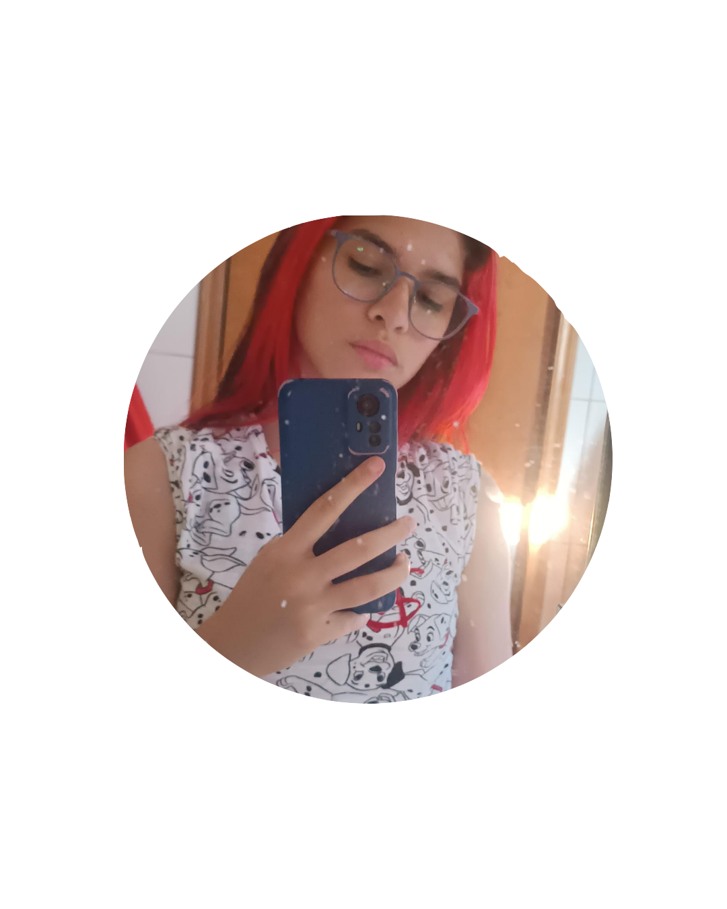
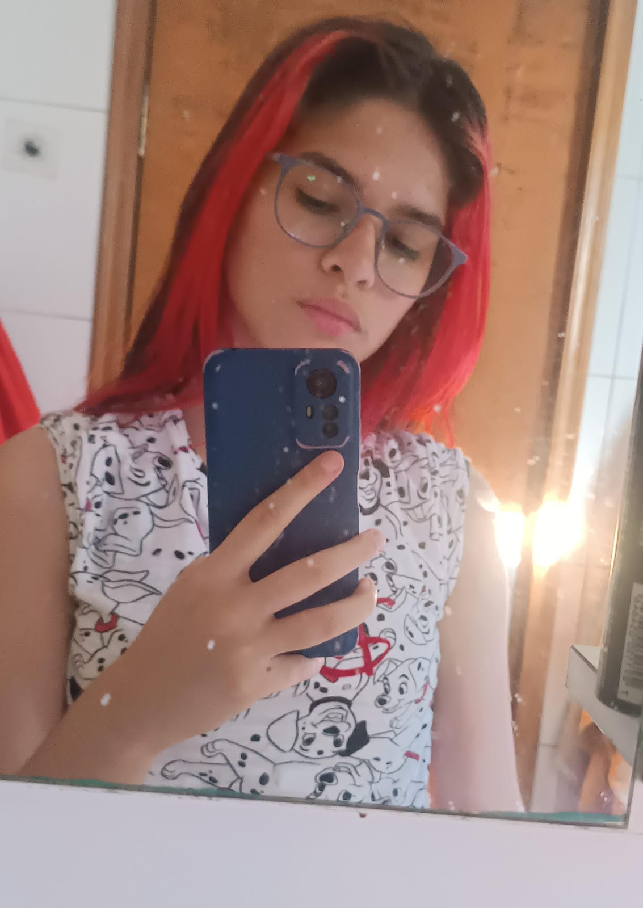

TRANSFORMANDO IDEIAS EM SOLUÇÕES DIGITAIS DE ALTA PERFORMANCE!
Sua presença online precisa ir muito além de um simples endereço na internet; ela deve ser a principal ferramenta de crescimento do seu negócio. Como programadora de sites, desenvolvo interfaces rápidas, responsivas e focadas na melhor experiência do usuário.

MINHAS ESPECIALIDADES
Website
Estudo e pratico desenvolvimento web constantemente, o que me trouxe sólido domínio na criação de websites modernos. Desenvolvo interfaces rápidas, responsivas e prontas para o mercado, unindo aprendizado contínuo com entregas profissionais.
CSS
Estudo constantemente o desenvolvimento web e possuo sólido domínio em CSS. Tenho autonomia para criar layouts modernos, animações fluidas e interfaces totalmente responsivas, garantindo que o design funcione perfeitamente em qualquer tela.
Propaganda
Especializando-me em design digital com foco na criação de peças publicitárias e anúncios visuais. Domino técnicas de composição, cores e tipografia para criar artes atraentes que capturam a atenção do público e geram conversões.

MUITO PRAZER, SOU MARIA EDUARDA.
Sou estudante de Informática para Internet na ETEC Francisco Garcia, no segundo ano do ensino médio e também curso o primeiro ciclo de Marketing no período noturno. Essa combinação me permite construir soluções digitais que não apenas funcionam - mas que geram resultados reais.
Do back-end bem estruturado à estratégia de posicionamento, cada projeto é pensado para unir tecnologia, criatividade e visão de negócio. Estou em constante evolução e aberto a novos desafios.